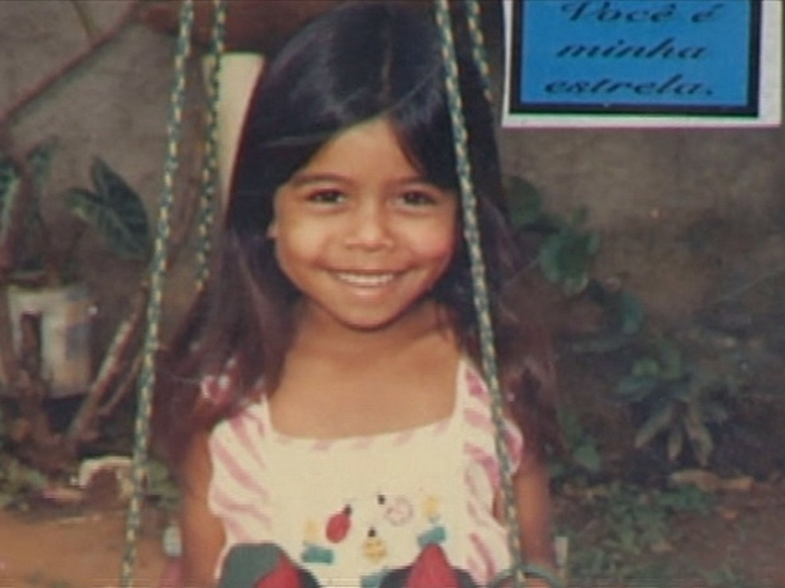

Radiação é um processo físico de emissão (saída) e de propagação (deslocamento) de energia por meio de partículas ou de ondas eletromagnéticas em movimento. Esse processo pode ocorrer em um meio material ou no espaço (vácuo).
São exemplos de radiações bastante conhecidas e comentadas: alfa, beta, gama, raio X, ultravioleta, luz visível, ondas de rádio, infravermelha, micro-ondas, etc
deseja ler toda materia? clique aqui!

O brasil traz em sua historia um caso de contaminação com a radiação e esse caso se chama cesio-137 um dos mais marcantes de nossa historia, alem de ter sido o maior desastre radiologico do mundo acontecendo um ano apos o desastre de chernobyl
esse acidente se iniciou em 13 de setembro de 1987, ele nos ensina que a falta de conhecimento nos trouxe erros que jamais serão esquecidos!
"eu me apaixonei pelo brilho da morte"
leia a materia